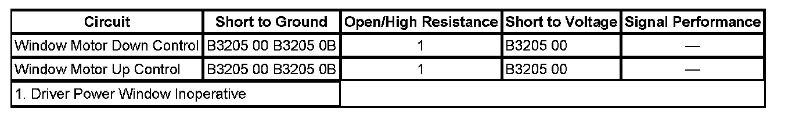

Power Window Inoperative - Driver Door
POWER WINDOW INOPERATIVE - DRIVER DOOR
DIAGNOSTIC FAULT INFORMATION

Perform the Diagnostic System Check - Vehicle prior to using this diagnostic procedure. Initial Inspection and Diagnostic Overview
CIRCUIT/SYSTEM DESCRIPTION
The driver and passenger door lock and side window switches are integrated control module switch assemblies. When a power window switch is activated in the up or down positions the Driver Door Switch (DDS) supplies power and ground to the window motor control circuits to drive the window motor in the required direction. Prior to activating a power window motor the DDS will supply the control circuit with a low current bias voltage in order to determine that a short to ground condition does not exist and during window motor operation the DDS continues to monitor the motor current to verify proper window motor operation.
CIRCUIT/SYSTEM TESTING
1. Install a scan tool and display the Driver Door Switch Inputs data list.
2. Activate the driver window switch in the up, down, and express down positions and verify that the Driver LF Window Switch displays the correct parameter in relation to the actual switch position.
- If the switch parameter is incorrect, replace the DDS.
3. Disconnect the power window motor connector and connect a test lamp between the control circuit terminals in the harness connector.
4. Verify that the test lamp illuminates when the switch is activated in both directions.
- If the test lamp does not illuminate, test the window motor control circuits for a open/high resistance. If the circuits test normal replace the DDS.
5. If the circuits test normal replace the driver window motor.
REPAIR INSTRUCTIONS
Perform the Diagnostic Repair Verification after completing the diagnostic procedure.
- Front Side Door Window Regulator Motor Replacement
- Control Module References for DDS replacement, programming, and setup. Verification Tests Programming and Relearning